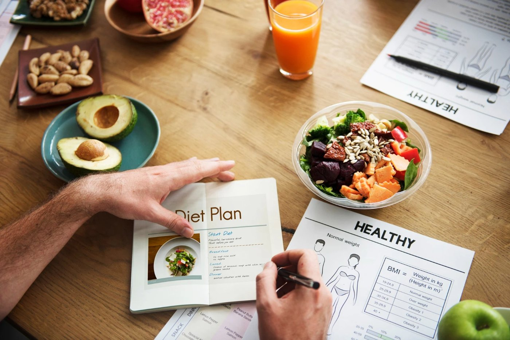
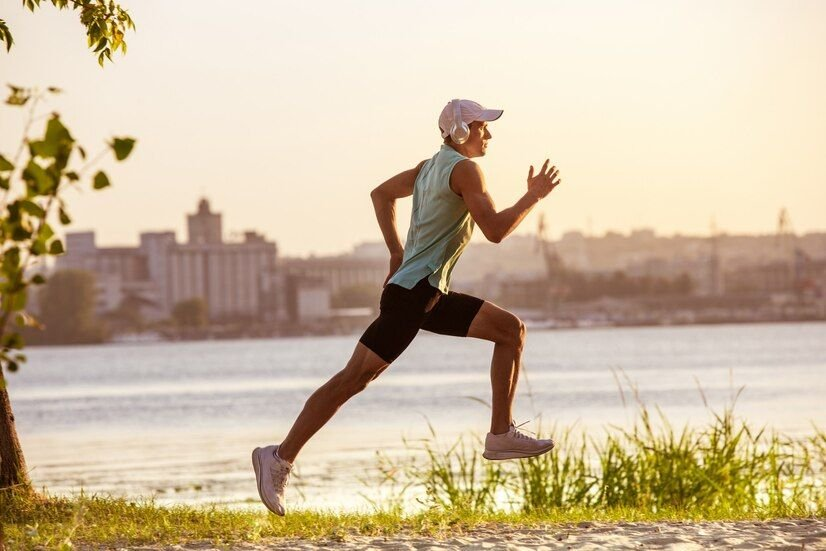

Pola Hidup Sehat
Tujuh kebiasaan dasar yang menopang kesehatan: tidur cukup, makan teratur, bergerak, bersih, tidak merokok, kelola stres, dan cek kesehatan.
Baca halamanSitus ini merangkum cara paling dasar untuk menjaga kesehatan diri dan keluarga: pola hidup sehat, gizi seimbang, aktivitas fisik, kesehatan mental, dan pencegahan penyakit. Semua angka dan anjuran diambil dari WHO serta Kementerian Kesehatan RI, jadi kamu tidak perlu menebak-nebak.

orang dewasa di dunia kurang aktif bergerak dan tidak memenuhi anjuran minimal 150 menit per minggu (WHO, 2022).
orang di dunia hidup dengan gangguan mental, dan sebagian besar belum mendapat penanganan yang layak (WHO).
kematian di dunia pada 2021 disebabkan penyakit tidak menular seperti jantung, kanker, dan diabetes (WHO).
target SDG 3.4: menurunkan kematian dini akibat penyakit tidak menular sebesar sepertiga pada 2030.
Lima halaman berikut disusun berurutan: dari kebiasaan sehari-hari, lalu isi piring, gerak tubuh, kondisi pikiran, sampai cara mencegah penyakit menular maupun tidak menular.
Tujuh kebiasaan dasar yang menopang kesehatan: tidur cukup, makan teratur, bergerak, bersih, tidak merokok, kelola stres, dan cek kesehatan.
Baca halamanPanduan Isi Piringku, batas gula-garam-lemak, dan angka acuan WHO untuk buah, sayur, serat, serta garam harian.
Baca halamanBerapa menit yang dibutuhkan tubuhmu tiap minggu, beda intensitas sedang dan berat, plus cara mulai dari nol tanpa cedera.
Baca halamanMembedakan stres biasa dan gangguan yang perlu bantuan, cara merawat pikiran, serta layanan konseling gratis di Indonesia.
Baca halamanCuci tangan enam langkah, jadwal imunisasi rutin, skrining tekanan darah, dan alasan berhenti merokok sekarang.
Baca halamanSemua materi punya daftar sumber yang bisa kamu cek sendiri, termasuk kredit foto dan lisensinya.
Buka daftar sumberPenyakit jantung, kanker, diabetes, dan gangguan pernapasan kronis menyumbang sekitar 75% kematian di dunia. Sebagian besar faktor risikonya bisa diubah: tekanan darah tinggi, gula darah tinggi, berat badan berlebih, kurang gerak, makan tidak seimbang, dan rokok.
Artinya, langkah pencegahan yang terlihat kecil, misalnya menambah satu porsi sayur, jalan kaki 30 menit, atau tidur tepat waktu, punya dampak besar kalau dilakukan konsisten bertahun-tahun.

Pilih satu hal: tidur 30 menit lebih awal, tambah satu porsi sayur, atau jalan kaki 15 menit setelah makan. Kesehatan dibangun dari keputusan kecil yang diulang.